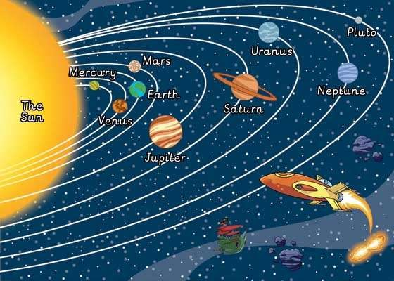

The Solar System
The solar system consists of nine planets, of which the earth is the one and the star in the centre is called the sun. This solar system is tucked away in a corner of a Milky way at a distance of about 30,000 to 33,000 light years from the centre of this galaxy. This system contains nine planets- Mercury, Venus, Earth, Mars, Jupiter, Saturn, Uranus, Neptune, and Pluto. A planet means a wanderer. Unlike the stars which have a fixed position, the planets shift their positions and velocity and are never stationary. The first five planets are named after Roman gods. The inner planets (Mercury, Venus, Earth and Mars) are highly dense and rocky. They resemble like the earth and are aptly called ?terrestrial planets?. The solar system is very big and Jupiter is the largest of all planets. Astronomy tells us so much about these celestial bodies. The earth is the only gifted planet which has life. Researches are going on experimenting life on Mars. The chances seem bleak. Man continues his quest to know more about the planets. With every technological innovation and scientific invention man is taking a step forward towards quenching his thirst for knowing the unknown.